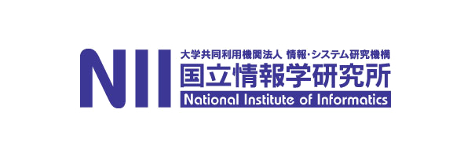
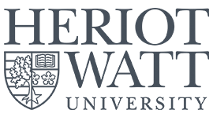
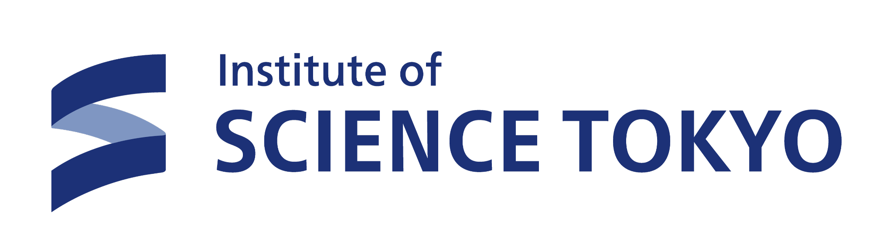
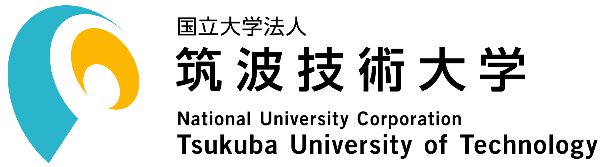
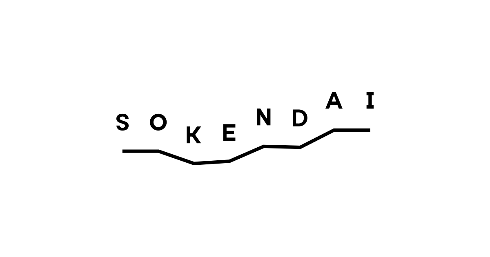

Linguistic
Sign languages and multimodal resources are full scientific objects — not simplified stand-ins for spoken language.
A UK–Japan collaboration on how linguistic science and AI should engage Deaf communities — as partners in research, not subjects of it.
Watch in Sign Language
To truly support Deaf communities, AI needs to recognize not just signs — but the people who are using them collaboratively.
Communication is built in the moment — vocabulary invented on the fly, misunderstandings repaired as they go. That's the phenomenon our research starts from.
Deaf signers shouldn't just be studied. In ASPIRE they help decide what gets studied, how, and what the results mean.
Sign languages and multimodal resources are full scientific objects — not simplified stand-ins for spoken language.
Handshape, gaze, touch, and spatial coordination aren't just form — they're how Deaf signers reason, argue, and theorize.
Deaf communities help define the research questions, interpret the data, and shape the frameworks — from the start, not as an afterthought.
AI and corpus tools built for the real structure of sign and tactile interaction — not retrofitted from speech pipelines.
Lab structures where Deaf researchers and community members sit at the table as co-researchers, advisors, and decision-makers.
Led by Mayumi Bono (NII) and Richard Bowden (Surrey), with Co-PIs at UCL, Heriot-Watt, Kyoto University, and Institute of Science Tokyo — plus early-career researchers across eight institutions in the UK and Japan.
 Project Lead
Project Lead
Mayumi Bono
PI, NII / SOKENDAI
 Project Lead
Project Lead
Richard Bowden
PI, University of Surrey

Annelies Kusters
Co-PI, Heriot-Watt

Kearsy Cormier
Co-PI, UCL

Robert Adam
Co-PI, Heriot-Watt

Koji Inoue
Co-PI, Kyoto University




